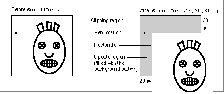

ScrollRect
To scroll the pixels of a specified portion of a basic graphics port's bitmap (or a color graphics port's pixel map), use theScrollRectprocedure.PROCEDURE ScrollRect (r:�Rect; dh,dv: Integer; updateRgn: RgnHandle);
r- The rectangle defining the area to be scrolled.
dh- The horizontal distance to be scrolled.
dv- The vertical distance to be scrolled.
updateRgn- A handle to the region of the window that needs to be updated.
DESCRIPTION
TheScrollRectprocedure shifts pixels that are inside the specified rectangle of the current graphics port. No other pixels or the bits they represent are affected. The pixels are shifted a distance ofdhhorizontally anddvvertically. The positive directions are to the right and down. The pixels that are shifted out of the specified rectangle are not displayed, and the bits they represent are not saved. It is up to your application to save this data.The empty area created by the scrolling is filled with the graphics port's background pattern, and the update region is changed to this filled area, as shown in Figure 2-8.
Figure 2-8 Scrolling the image in a rectangle by using the
ScrollRectprocedure
TheScrollRectprocedure doesn't change the local coordinate system of the graphics port; it simply moves the rectangle specified in therparameter to different coordinates. Notice thatScrollRectdoesn't move the graphics pen or the clipping region. However, because the document has moved, they're in different positions relative to the document.By creating an update region for the window,
ScrollRectforces an update event. After usingScrollRect, your application should use its own window-updating code to draw into the update region of the window.SPECIAL CONSIDERATIONS
TheScrollRectprocedure may move or purge memory blocks in the application heap. Your application should not call this procedure at interrupt time.SEE ALSO
"Scrolling the Pixels in the Port Rectangle" beginning on page 2-18 provides a general discussion of the use ofScrollRect, and Listing 2-5 on page 2-19 illustrates how to useScrollRectto scroll through a document in a window.